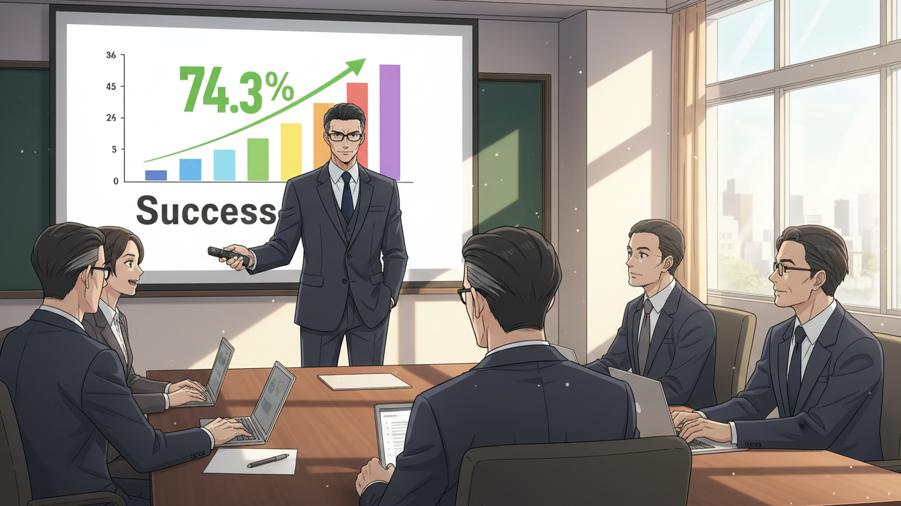
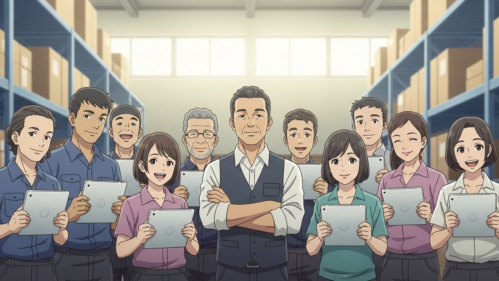

📦 Do, 85% - BJ대한물류 AI 도입 생존기
Episode 18: "완성"

"성공했습니다."
정민수의 목소리가 회의실에 울렸다.
대형 스크린.
AI 도입 현황 (3/9 금 기준)
- 완료 센터: 12개
- 전체 인원: 777명
- 평균 적응률: 74.3%
- 기간: 9주 (1/6~3/9)
경영진 5명이 앉아 있었다.
"74%라..."
한 임원이 중얼거렸다.
"목표가 70%였죠?"
"네. 초과 달성입니다."
정민수가 답했다.
"9주 만에 12개 센터를 안정화시켰습니다."
"나머지 4개 센터는요?"
"Week 9부터 자율 확산 예정입니다."
"자율 확산?"
"네. 이제 저희가 직접 투입하지 않아도..."
정민수가 다음 슬라이드로 넘겼다.
자율 확산 메커니즘
- 성공 센터 → 미도입 센터로 자연스러운 확산
- 센터장들의 자발적 요청
- 작업자들의 peer-to-peer 전파
"12개 센터가 성공하니까, 나머지 4개 센터 작업자들이 직접 물어보고 있습니다."
"...직접요?"
"네. '우리도 하고 싶다'고요."
📞 Scene 1: 광명센터 - 첫 번째 자율 요청
광명센터장 이경수(49세)가 전화를 걸었다.
"여보세요, 정 본부장님?"
"네, 이경수 센터장님."
"저... 부탁이 있어서요."
"말씀하세요."
"저희 센터도 AI 시스템 도입하고 싶습니다."
정민수가 놀랐다.
"...직접 요청하시는 거예요?"
"네. 작업자들이 계속 물어봐요. '우리는 언제 하냐'고."
"어떻게 알았죠?"
"옆 센터요. 평택이랑 수원."
이경수가 설명했다.
"거기 작업자들이 자랑하더라고요. '우리 이제 태블릿 써', '일 편해졌어' 하면서."
"...자랑을요?"
"네. 그래서 우리 작업자들이 부러워해요."
정민수가 웃었다.
"알겠습니다. 다음 주 월요일부터 시작하겠습니다."
🗓️ Scene 2: TF실 - Week 9 계획
15명이 모였다.
"다들 잘 쉬었어요?"
도진이 물었다.
주말을 보내고 온 팀원들의 얼굴이 밝다.
"네!"
"좋아요. 이번 주 계획 말씀드릴게요."
도진이 화이트보드에 썼다.
Week 9-10 미션: 자율 확산
- 나머지 4센터: 광명, 시흥, 군포, 오산
- 총 인원: 223명
- 전략: 자율 요청 대응
"이번엔 우리가 먼저 가지 않아요."
"네?"
서윤이 놀랐다.
"그들이 요청할 때까지 기다립니다."
"...기다려요?"
"네."
도진이 설명했다.
"지금까지는 우리가 설득했어요. 하지만 이제는 그들이 원해요."
도진이 전화기를 들어 보였다.
"어제 광명센터장한테 전화 왔어요. '우리도 하고 싶다'고."
"진짜요?"
"네. 이게 진짜 변화예요."
도진이 웃었다.
"강요가 아니라 선택. 그게 지속 가능한 변화죠."
💡 Hands-On Tutorial: 도진의 Autonomous Adoption 전략
Real-world situation: 도진은 9주 동안 12개 센터를 직접 설득했습니다. 하지만 나머지 4개 센터는 다릅니다. 그들이 스스로 원할 때까지 기다립니다. 이것이 '자율적 확산(Autonomous Adoption)' 전략입니다.
Copy-paste prompt:
현재 상황:
- 도입 완료: {대상, 예: "12개 부서"}
- 성공률: {비율, 예: "74%"}
- 미도입: {대상, 예: "4개 부서"}
- 기간: {기간, 예: "9주"}
변화:
- 초기: 저항 → 설득 필요
- 현재: 성공 사례 존재 → 관심 증가
- 미래: 자율적 확산 가능?
목표:
- 나머지 부서들이 스스로 요청하게 만들기
- 강요 없이 자연스러운 확산
- 지속 가능한 변화 완성
다음 형식으로 Autonomous Adoption 전략을 작성해주세요:
1. 대기 전략
- 언제까지 기다릴 것인가
- 무엇을 기다릴 것인가 (요청의 신호)
- 강제 투입 vs 자율 요청의 판단 기준
2. 가시성 강화
- 성공 사례를 어떻게 보여줄 것인가
- Peer-to-peer 전파 메커니즘
- 자연스러운 정보 확산 방법
3. 진입 장벽 제거
- 요청 프로세스 간소화
- 도입 난이도 최소화
- 실패 리스크 제거
4. 선순환 구조
- 성공 → 소문 → 요청 → 성공의 사이클
- 어떻게 가속화할 것인가
5. 측정 지표
- 자율 확산 성공의 기준
- 얼마나 빨리 확산되어야 하는가
- 실패 시 Plan B
실행 가능하고 구체적으로 작성해주세요.
What you'll get:
Autonomous Adoption 전략이 대기, 가시성, 진입 장벽, 선순환, 측정으로 구조화됩니다. 강요가 아닌 자발적 선택으로 변화를 확산시키는 실전 계획을 얻을 수 있습니다.
Try it yourself:
- [ ] claude.ai 접속
- [ ] 위 프롬프트 복사
- [ ] {변화} → 도입한 것 (예: "애자일 방법론")
- [ ] {비율}, {대상} → 현재 상황
- [ ] {기간} → 소요 시간
- [ ] 초기 vs 현재 상황 정리
- [ ] 목표 명확히
- [ ] 실행 후 5단계 전략 확인
- [ ] 대기 전략 수립
- [ ] 가시성 강화 방법 적용
- [ ] 진입 장벽 제거
- [ ] 선순환 구조 설계
Example result:
1. 대기 전략
대기 기간: 2주 (Week 9-10)
기다릴 신호:
□ 센터장 직접 요청 전화
□ 작업자들의 반복적 문의
... (중략)
4. 선순환 구조
Flywheel Effect:
Phase 1: 성공 (12개 센터)
↓
Phase 2: 소문 (센터 간 전파)
"평택 애들 일찍 퇴근하더라"
↓
Phase 3: 관심 (미도입 센터)
"우리도 할 수 있어?"
🚀 Scene 3: 광명센터 - 신속 도입
도진과 서윤이 도착했다.
"센터장님, 안녕하세요."
"아, 도진 팀장님!"
이경수가 반겼다.
"빨리 와주셨네요."
"당연하죠. 요청하셨잖아요."
도진이 웃었다.
"어떻게 진행할까요?"
"저희가 기존 센터에서 쓴 방식 그대로 하면 돼요. 1주일이면 안정화됩니다."
"1주일이요?"
"네. 처음엔 9주 걸렸지만, 이제는 프로세스가 완벽해서..."
서윤이 설명했다.
"Day 1: 오리엔테이션, Day 2-3: 1:1 교육, Day 4-5: 실전 적용. 그럼 적응률 70% 넘어요."
"...대단하네요."
"센터장님이 적극적이시면 더 빨라요."
도진이 말했다.
"작업자분들한테 '우리가 선택했다'고 강조해주세요."
"알겠습니다."
3월 20일 화요일, 오후 5시 - 광명센터 작업장.
"다들 어때요?"
이경수 센터장이 물었다.
작업자 10명이 모였다.
"괜찮아요!"
한 작업자가 답했다.
"수원 형들이 자랑하던 게 이거였구나."
"맞아요. 진짜 편해요."
"저는 오늘 30분 일찍 끝났어요."
"저도요!"
작업자들이 웃었다.
"센터장님, 감사합니다."
"아니에요. 여러분이 원해서 한 거잖아요."
이경수가 웃었다.
"우리 선택 잘했어요."

🔗 Scene 4: 연쇄 반응
도진의 전화가 울렸다.
"여보세요?"
"도진 팀장님? 시흥센터 김종민입니다."
"네, 센터장님."
"저희도 신청하고 싶어서요."
"...시흥도요?"
"네. 광명이 시작했다는 소식 들었어요."
"빠르네요."
도진이 웃었다.
"다음 주 월요일 가능해요?"
"좋습니다!"
같은 날 오후 2시.
또 전화.
"팀장님, 군포센터 박철수입니다."
"네."
"저희도요..."
"알겠습니다. 다음 주 화요일부터요."
오후 4시.
세 번째 전화.
"팀장님, 오산센터입니다."
"...오산도요?"
"네. 모두 하던데 저희만 안 하면..."
"알겠습니다. 다음 주 수요일요."
도진이 전화를 끊고 서윤을 봤다.
"하루에 3개 센터가 요청했어요."
"...진짜요?"
"네."
도진이 웃었다.
"선순환이에요. 1개가 성공하니까, 나머지가 자동으로 따라와요."
"대단해요..."
서윤도 웃었다.
"우리 9주 동안 12개 센터 했는데, 이제는 1주일에 4개 센터네요."
"맞아요. 이게 진짜 변화죠."
🌐 Scene 5: Week 10 - 4개 센터 동시 진행
4개 센터가 동시에 돌아갔다.
- 광명: 65명 (Week 2)
- 시흥: 52명 (Week 1)
- 군포: 48명 (Day 1)
- 오산: 58명 (준비 중)
TF 팀이 분산 배치됐다.
도진은 본사에서 총괄.
서윤은 데이터 모니터링.
나머지 13명이 현장 지원.
3월 30일 금요일, 오후 6시 - TF실.
"Week 10 결과입니다."
한지우가 발표했다.
4개 센터 현황 (3/30 금)
- 광명: 65명, 적응률 78% ✅
- 시흥: 52명, 적응률 72% ✅
- 군포: 48명, 적응률 69% ⚠️ (1% 부족)
- 오산: 58명, 적응률 75% ✅
"군포만 1% 부족해요."
"다음 주면 넘을 거예요."
도진이 말했다.
"중요한 건..."
도진이 대시보드를 가리켰다.
전사 현황 (3/30 금)
- 16개 센터 (전부)
- 1,000명
- 평균 적응률: 73.8%
"1,000명이에요."
도진의 목소리가 떨렸다.
"전사 작업자 전원이에요."
15명이 조용해졌다.
"...해냈네요."
서윤이 중얼거렸다.
"11주 만에."
👨💼 Scene 6: 정민수의 최종 평가
정민수가 도진을 불렀다.
"앉으세요."
"네, 실장님."
"11주 동안 수고했어요."
"감사합니다."
"결과가 놀라워요."
정민수가 자료를 보여줬다.
AI 도입 프로젝트 최종 성과
도입 현황:
- 16개 센터 (전국)
- 1,000명 (전 작업자)
- 평균 적응률: 73.8%
- 기간: 11주 (1/6~3/30)
정량 효과:
- 작업 시간 단축: 평균 14%
- 이동 거리 감소: 평균 16%
- 오류율 감소: 평균 19%
- 만족도: 평균 78%
정성 효과:
- 자발적 확산 달성
- 조직 문화 변화
- 변화 관리 노하우 축적
"74% 적응률, 78% 만족도."
정민수가 웃었다.
"우리 목표가 70%였죠?"
"네."
"초과 달성이에요. 게다가..."
정민수가 강조했다.
"마지막 4개 센터는 자발적 요청이었어요. 이게 진짜 성공이에요."
"...감사합니다."
"도진 씨."
정민수가 진지해졌다.
"제안이 있어요."
"네?"
"AI 혁신센터 만들 거예요."
"...센터요?"
"네. 본사에 상설 조직으로."
정민수가 설명했다.
"지금까지 TF였잖아요. 이제 정식 부서로 만듭니다."
"...그럼 저희는?"
"도진 씨가 센터장이 되는 거예요."
정민수가 웃었다.
"차장 승진하고, AI 혁신센터장."
도진이 놀랐다.
"...저요?"
"당연하죠. 11주 동안 1,000명 바꾼 사람이 누구예요?"
"...감사하지만."
도진이 말을 멈췄다.
"생각할 시간 주세요."
"물론이에요. 1주일 드릴게요."
👏 Scene 7: 팀 회의 - 마지막 날
15명이 마지막으로 모였다.
"여러분."
도진이 말했다.
"오늘이 TF 마지막 날이에요."
침묵.
"11주 동안... 정말 고생 많으셨어요."
도진이 한 명씩 봤다.
"서윤 씨, 데이터 분석 덕분에 우리가 방향을 잃지 않았어요."
서윤이 웃었다.
"소라 씨, 인천에서 투명성을 보여줬어요."
"민재 씨, 부천에서 1:1 지원을 완성했어요."
"태양 씨, 안양에서 위기를 돌파했어요."
도진이 계속했다.
"현우 씨, 지연 씨, 준석 씨, 수진 씨..."
신규 멤버들의 이름을 불렀다.
"여러분 덕분에 9개 센터가 성공했어요."
"수민 씨, 지우 씨, 기술 지원 없었으면 불가능했어요."
도진이 마지막으로 말했다.
"우리 해냈어요. 1,000명."
15명이 박수쳤다.
💬 Scene 8: 서윤과의 대화
도진과 서윤이 난간에 기댔다.
"팀장님."
"네?"
"승진 제안 받으셨죠?"
서윤이 물었다.
"...어떻게 알았어요?"
"실장님이 저한테도 물어보셨어요. '도진 씨 어떤 것 같냐'고."
"뭐라고 답했어요?"
"'하실 거예요'라고요."
서윤이 웃었다.
"팀장님 성격상."
"...저 모르겠어요."
도진이 솔직하게 말했다.
"본사 부서장이 되는 게 맞는지."
"왜요?"
"저 현장 사람이잖아요."
도진이 하늘을 봤다.
"8년 동안 작업복 입고 일했어요. 근데 갑자기 정장 입고 본사에 앉아 있으면..."
"적응 못 하실 것 같아요?"
"네."
"팀장님."
서윤이 말했다.
"11주 전 팀장님도 그랬어요."
"...네?"
"AI 못 쓸 것 같다고. 자기는 아날로그 사람이라고."
서윤이 웃었다.
"근데 지금은요?"
"...하고 있네요."
"맞아요. 사람은 적응해요."
서윤이 도진을 봤다.
"그리고 팀장님은 현장을 아니까, 본사에서도 제대로 할 수 있어요."
"...그럴까요?"
"네. 확신해요."
✉️ Scene 9: 1주일 후 - 도진의 선택
"결정하셨어요?"
정민수가 물었다.
"네."
도진이 답했다.
"하겠습니다."
"좋아요!"
정민수가 웃었다.
"조건이 있어요."
"말씀하세요."
"서윤 씨를 부센터장으로 같이 데려갈게요."
"당연하죠."
"그리고..."
도진이 계속했다.
"AI 혁신센터가 현장과 떨어지면 안 돼요. 한 달에 한 번은 제가 직접 센터 방문할 거예요."
"좋아요."
"마지막으로."
도진이 웃었다.
"실패해도 책임 안 물어주세요."
"...그건 안 되죠."
정민수가 웃었다.
"농담이에요. 도진 씨가 실패할 리 없어요."
🏢 Scene 10: 새 출발
새 사무실.
문패: AI 혁신센터
도진이 정장을 입고 들어왔다.
불편하다.
하지만 참는다.
"팀장님!"
서윤이 먼저 와 있었다.
"부센터장님."
"어색해요, 그 호칭."
"저도요."
둘이 웃었다.
"이제 뭐 해요?"
서윤이 물었다.
"Phase 2요."
"Phase 2?"
"네. 1,000명이 시작이에요."
도진이 화이트보드에 썼다.
AI 혁신센터 Phase 2
- 목표: AI 고도화
- 기간: 2025년 하반기
- 대상: 16개 센터 심화 적용
"이제 진짜가 시작이에요."
🎯 Learning Concept: "완성은 시작이다"
Level 5 Concept: Completion as Beginning (완성의 시작)
도진은 11주 만에 1,000명을 변화시켰습니다. 프로젝트는 완성되었습니다. 하지만 이것은 끝이 아닙니다. 완성은 새로운 시작입니다. Phase 1이 끝나면 Phase 2가 시작됩니다. 변화는 한 번의 프로젝트로 끝나지 않습니다. 지속되어야 합니다. 발전되어야 합니다. 그것이 진짜 변화입니다.
Why it matters in 조직:
많은 프로젝트가 '완성'에서 멈춥니다. 축하하고, 해산하고, 잊혀집니다. 하지만 진짜 성공한 프로젝트는 완성 후에도 계속됩니다. 조직에 뿌리내립니다. 문화가 됩니다.
Remember (도진의 깨달음):
"1,000명이 끝이 아니라 시작이다. 이제 우리는 더 높이 올라간다."
**[Episode 18 완료]**
4월 말, 경영진 최종 보고. 1년 계약의 종료. 그리고... 도진의 다음 선택. "이제 어디로 갈까?" Episode 19에서 계속됩니다.